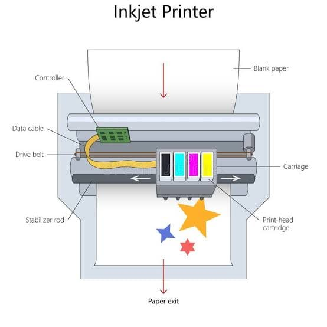
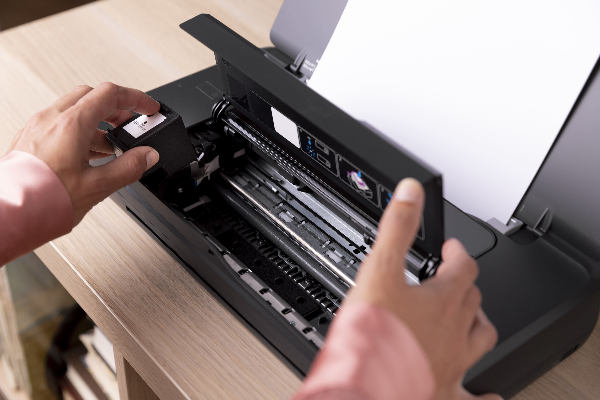

An inkjet printer works by propelling tiny droplets of liquid ink through microscopic nozzles in the print head, placing them precisely on the paper below. The process happens at high speed — the print head moves back and forth across the page while the paper feeds through, building up the image or text line by line in a pattern too fine for the human eye to resolve at normal viewing distance.
Modern inkjets use either thermal or piezoelectric technology to fire ink droplets. Thermal systems heat the ink rapidly until a small vapour bubble forms, which pushes a droplet out of the nozzle. Piezoelectric systems use a piezo crystal that deforms electrically, mechanically squeezing ink through the nozzle. The result is similar in quality — the difference is mostly in how the hardware is manufactured and repaired.
Colour inkjets use multiple ink tanks — typically cyan, magenta, yellow, and black (CMYK). By varying the combination and density of these four inks, the printer creates the full visible colour range. Photo printers add additional ink colours to extend the gamut and improve tonal smoothness.
Each nozzle on an inkjet print head is extremely small — measured in picoliters (trillionths of a litre). These nozzles can clog if ink dries inside them, which is why inkjet printers run periodic maintenance cycles even when you're not printing. These cycles push ink through the nozzles to keep them clear, which consumes ink. This is a key reason why cartridges used in infrequently-operated printers run out faster than expected.


Laser printers use an entirely different process from inkjets. Instead of liquid ink, they use a fine powder called toner. Instead of spraying droplets, they use a laser beam to create the image on a photosensitive drum, which then attracts toner and transfers it to paper.
Here's the sequence: A laser beam scans across the surface of a rotating drum, selectively charging portions of the drum with static electricity to form the image. The drum then rotates past a toner reservoir — the charged areas attract toner powder, which sticks to them. The paper passes between the drum and a transfer roller, pulling the toner off the drum and onto the page. Finally, the paper passes through a fuser — a heated roller that melts the toner into the paper fibres, bonding it permanently. The result is a page that is immediately dry, smear-resistant, and extremely durable.
This process explains why laser printers produce such sharp text: toner particles are extremely fine and the laser positioning is very precise. It also explains why laser toner doesn't dry out between uses — it's a powder, not a liquid, so it remains stable indefinitely in the cartridge.
For Canadian offices dealing with a high volume of printed documents daily, the fuser mechanism means there's a brief warm-up time when the printer starts from cold. Modern laser printers minimize this to a few seconds, but it's a design characteristic of the technology.
Cartridge manufacturers rate their products by "page yield" — the number of pages a cartridge prints before it's empty. These figures are measured under standardized test conditions (typically 5% page coverage — the approximate coverage of a standard text document). If your pages are more heavily covered — photos, graphics, dense text — your real yield will be lower than the rated figure.
When comparing cartridge options, calculate the cost per page: divide the cartridge price by its rated yield. A more expensive cartridge with higher yield often delivers a lower cost per page than a cheaper one. This is especially relevant for Canadian buyers choosing between standard and high-yield (XL) cartridges at retail.
Original Equipment Manufacturer (OEM) cartridges are produced by the printer maker. Third-party cartridges are made by independent manufacturers. In Canada, both are widely available. Third-party cartridges can cost significantly less but vary in quality — some perform comparably to OEM, others deliver lower print quality or shorter yield. Using a third-party cartridge does not void your printer warranty under Canadian consumer protection law, contrary to what some manufacturers imply.
Some inkjet printers use refillable ink tanks instead of replaceable cartridges. Rather than discarding a plastic cartridge when it runs out, you pour liquid ink into a built-in reservoir directly. These printers typically cost more upfront but have dramatically lower per-page costs over time — tank refill bottles are considerably cheaper per millilitre than cartridges.
For Canadian households and small businesses with consistent, moderate print volumes, an ink tank printer can be an excellent long-term investment despite the higher purchase price. The per-page savings add up quickly once you're refilling rather than replacing.
Empty ink and toner cartridges can be recycled through retailer take-back programs available at major electronics and office supply stores across Canada, including locations in Ontario, Quebec, British Columbia, and Alberta. Some municipalities also accept cartridges through e-waste programs. Recycling rather than disposing of cartridges in general waste is the recommended approach across Canadian provinces.